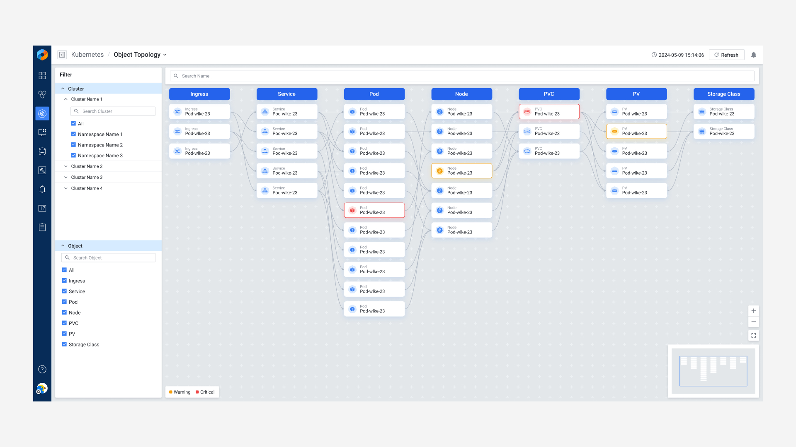
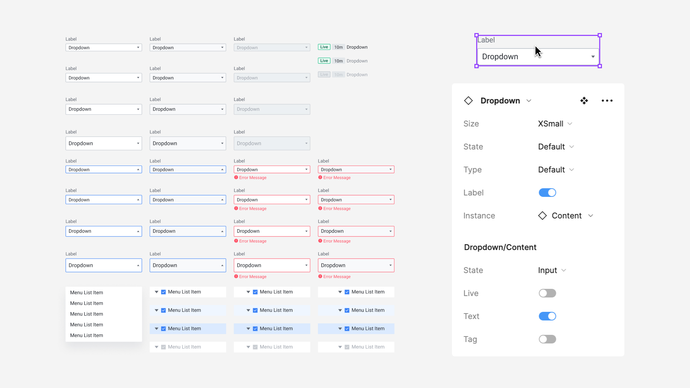

eXemble — 사내 문서 기반 LLM 워크플로우 환경 설계하기
eXemble은 사내 문서를 기반으로 LLM과 워크플로우를 활용할 수 있도록 설계된 온프레미스 AI 서비스다. 나는 이 프로젝트에서 초기 상위 구조를 바탕으로 PM, 개발자와 협업하며 상세 서비스 설계와 전반적인 화면 디자인을 주도했다. 단순한 채팅형 AI 화면이 아니라, 데이터·모델·에이전트·워크플로우·권한·로그까지 연결된 운영형 플랫폼으로 구체화하는 데 집중했다.





